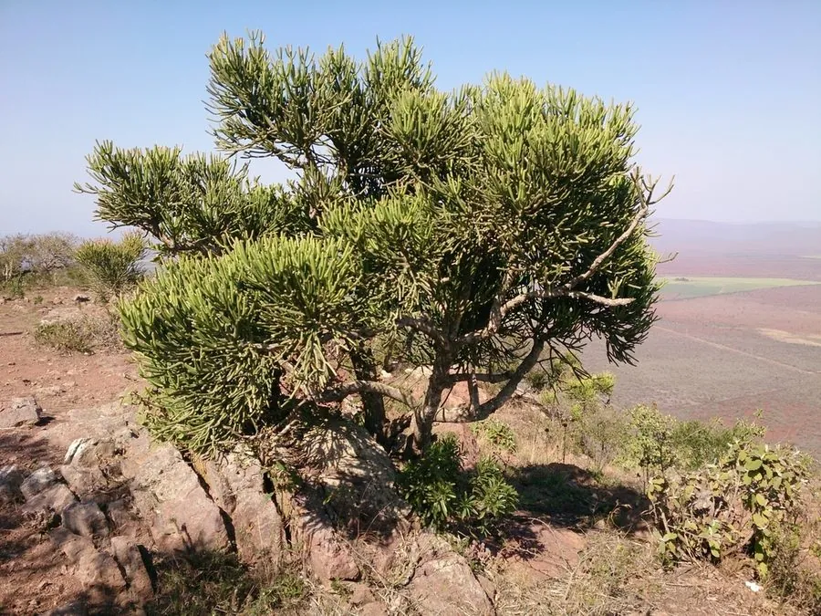

多肉植物 · 植物界
光棍树 Euphorbia tirucalli

大戟科肉质灌木，茎干光裸无叶、圆棍状，含剧毒白色乳汁，常作绿篱和景观植物，原产非洲，又称绿玉树。
- 分类
- 门被子植物门纲木兰纲目金虎尾目科大戟科属大戟属
- 栖息环境
- 非洲东部和南部干旱灌丛，喜光、耐旱、畏寒
- 地理分布
- 原产非洲东部与南部，世界各地热带、亚热带地区栽培
- 保护级别
- 暂无评估
物种志
光棍树为大戟科大戟属肉质灌木或小乔木，高 2–6 米，茎绿色、圆柱状，分枝多且轮生，光滑无毛；叶极小，长 5–10 毫米，早落，因此整株看起来像一丛光秃的绿棍。花序为杯状聚伞花序，生于枝顶，花小，花期春季。
光棍树原产非洲东部和南部的干旱地区，喜阳光充足、温暖干燥的环境，耐旱力强，畏寒怕涝。它的白色乳汁含有大戟二烯醇等成分，毒性很强，接触皮肤会引起红肿、灼痛，进入眼睛可能造成严重损伤，并且有促癌风险，修剪时必须戴手套并避免乳汁飞溅。因茎干造型独特、耐旱好养，光棍树常被用作园林景观和绿篱植物，但其乳汁也限制了它在有儿童和宠物的环境中的使用。
形态与习性
- 株高2–6 米，茎圆柱状、多分枝
- 花期春季，花序生于枝顶
- 果期花后结蒴果
- 光照极喜光，光照不足易徒长
- 水分极耐旱，忌积水
- 土壤疏松、排水良好的沙质土
- 繁殖以枝插为主，需晾干伤口
- 主要用途园林景观、绿篱、盆栽观赏
趣味知识
- 光棍树并非真的没有叶子，它的叶片极小且很早就脱落，主要靠绿色茎干光合作用。
- 白色乳汁毒性很强，接触皮肤会红肿灼痛，修剪时必须戴手套。
- 乳汁不慎入眼可能造成严重损伤，应避免在儿童和宠物活动区种植。
- 在原产地非洲，光棍树常被用来围成绿篱，因此有“绿玉树”的别称。